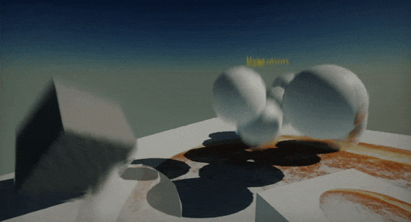

Flax 0.2 release notes
Highlights
Nested Prefabs

We've added a new asset type: Prefab. It is used to build archetypes of actors and scripts to reuse them in games. The prefab acts like a template or an archetype which you can spawn in the scene. Any edits made to a prefab asset are immediately reflected in all instances produced from it but you can also override components and settings for each instance individually. This helps with creating advanced gameplay content. Also, Flax supports nesting prefabs inside the prefabs out of the box!
To learn more about prefabs see the related documentation here.
Motion Blur

Flax contains in-build Motion Blur effect that simulates the real-life camera aperture. Now, dynamic objects are rendered to the Motion Vectors buffer which is used to draw per-object (or skinned model per-bone) blur. Also, any camera movement provides realistic blur which helps with creating stunning visual effects and cut-scenes.
Plugins

Now, Flax supports Game Plugins and Editor Plugins. Developers can also easly include .Net libraries to be used in game scripts. Flax plugins system allows adding custom functionalities and extending engine features. See the dedicated page here to learn more about creating and using plugins.
Subsurface materials
Materials will now use Shading Model property to define the type of the shading to use for it. Supported are Unlit, Lit and Subsurface. Creating skin, wax or foliage materials is now much easier and gives more possibilities.
Tessellation and Displacement
The newest Flax version supports tessellated materials and displacement maps. Using this feature can help to achieve realistic looking terrain or water surfaces.
Texture arrays and volume textures in materials
New material parameter types and improve render targets C# API enable developers to create and use 3D textures and texture arrays. Also, GPUContext has been updated to support rendering PostFx material to a single texture slice. New C# API allows creating advanced visual effects for your games such as volumetric clouds or water flow simulations on a GPU.
Texture mipmap preview
Texture windows and Cube Texture windows contain now dedicated widgets to preview a single texture mipmap and an option to selected a sampler (point or linear). This helps with advanced game development and working with the textures content.
Also, many editor windows contain a dedicated button to the related documentation (opens a browser with Flax documentation).
Scene serialization changes
Starting from this version scenes and actors collections will serialize scripts inlined in the actors data list, instead of inside parent actor. It is related to the scene objects serialization changes introduced during prefabs system implementation. The new engine version will still load scenes in the older format but serialized scenes will match the new design.
Changelog
Version 0.2.6169 - 25 September 2018
- Add support for sampling normal map texture object in Sample Texture node with automatic normal vector unpacking
- Change default Material Instance editor window panels split to 0.5
- Fix colliders properties synchronization in prefab instances
- Fix texture format autodetect on reimport
- Fix sample texture node to not use explicit mipmap level in some cases
- Fix creating comment on selected nodes with Ctrl+S
- Fix rare error when changing preview model in material preview
- Fix removing main material node in materials
- Fix visject surface error on parsing numbers in context menu
- Fix combobox deselecting
- Fix crash when creating prefab from model with baked lightmap data
- Fix importing FBX models without nodes structure but valid meshes inside
- Fix deadlock in asset managed objects creation in rare casesFix importing textures with alpha channel to ColorRGB with compression enabled (alpha channel was used to premultiply colors which was wrong)
- Fix pasting text to TextBox when it's empty
- Fix creating prefab from model that has baked lightmap data (remove it during prefab asset creation)
- Fix undo on object reparent
Version 0.2.6168 - 23 September 2018
Contributors: stefnotch
- Add Motion Blur effect
- Add Motion Vectors rendering support
- Add per-bone motion vectors for skinned meshes
- Add Subsurface material shading model
- Add
MaterialShadingModelenum - Add Tessellation support to materials
- Add search popup to asset picker
- Add Panner node to materials
- Add Wireframe view mode
- Add support for restoring material slots on model reimport
- Add Camera Position node to materials
- Add
PerBoneMotionBlurto Animated Model - Add
RenderTask.CameraCut()to mark the next rendered frame as camera cut - Add removing static flags from actors added to level during play in editor (eg. via drag and drop)
- Add Visject Surface comments (with
Ckey for selection or withC + Left Mousefor custom area) - Add profile event for GBuffer clear
- Add Per Instance Random node to materials
- Add option to show material shader HLSL source code
- Add splash screen to build game (with Flax logo)
- Add support for point and spot lights shadows for volumetric fog
- Add filtering textbox contents (remove \r characters)
- Add support for scrolling multiline textbox with mouse wheel
- Add even smarter Visject context menu (eg. type
trueto spawn boolean literal node with value set to true) - Add DefaultFrameRate to animation import options
- Refactor material shader template to simplify the code generation and improve material compilation time
- Refactor Visject Surface and make it easier to customize or extend
- Optimize Decal, GUI and PostProcess material types constant buffers usage
- Optimize DirectX resources binding if render stage is not used
- Optimize DirectX 12 backend
- Modify default scene lightmap options
- Improve Editor drag handler API
- Use GPU buffers resources naming in dev builds
- Fix selecting textbox characters if content has scale other than 1
- Fix text layout for many new-line characters
- Fix not needed remove button for some Visject nodes
- Fix asset picker and make it bigger in some cases to prevent buttons not matching the layout
- Fix quality of the skinned mesh blend weights to prevent blending issues
- Fix various prefab issues
- Fix preserving alpha channel value when using color selecting wheel control
- Fix selecting viewport area under FPS counter control (if counter is hidden)
- Fix shadows issues for materials with position offset in use
- Fix crash when Custom Code node in materials has no code
- Fix setting audio source volume on init
- Fix crash when adding new objects to actor in Start
- Fix Game window undocking in Editor on select in play mode with mouse auto-center mode enabled
- Fix scene graph event handling
- Fixes for DirectX 12 backend
- Fix
BoundingBoxfields/properties serialization (in C# scripts) - Fix typos
Version 0.2.6167 - 2 September 2018
- Add plugins support
- Add
GamePluginclass - Add
EditorPluginclass - Add plugins manager window in Editor
- Add support for custom data stored in project cache
- Add loading plugin assemblies from the project and build game
- Add
Debug.Writefor direct message write to log - Add support for accessing custom game settings at runtime
- Add helper C# API for editing custom game settings in editor
- Add
JsonAsset.CreateInstance<T>()for easy settings object casting - Add support for JsonAsset object from any loaded assembly
- Add support for restoring custom editor windows on scripts reload
- Add
ScriptsBuilder.Compileto build a custom solution - Add support for showing all files from Content directory in editor
- Add support for renaming selected file in Content Window with F2 key
- Add
Versioneditor - Add a reference to FlaxEditor assembly for game scripts in Editor
- Add showing tooltip with full type name in add script popup
- Add support for adding scripts from all loaded assemblies (including plugins)
- Add
EditorIconscontainer for faster editor icons caching - Optimize logging by managed code
- Optimize control and script types searching in editor
- Fix too frequent editor cache saving
- Fix typos
Version 0.2.6166 - 28 August 2018
- Add support object ids mapping inside scripts (use
ObjectIdModifieron deserialization) - Add
ISceneObjectinterface to unify various functionalities for both Scripts and Actors - Add
TextLayoutOptions.Scale - Improve text layout
- Improve Mono backend performance
- Improve object references handling in scripts in prefabs
- Improve reverting changes to prefab for ISceneObject references
- Increase default editor update rate to 60 FPS and reduce physics update
- Remove deprecated
Globals.LocalizationFolderandGlobals.ConfigFolder - Fix rare crashes on prefabs apply
- Fix Script callback searching (better method signature query)
- Fix using Script callback methods in base classes that use generic parameters
Version 0.2.6165 - 26 August 2018
Contributors: klukule, stefnotch
- Add Nested Prefabs
- Add creating, editing and using prefab assets
- Add restoring prefab instance changes or per property value
- Applying prefab instance change to the prefab asset
- Add
PrefabManager(useSpawnPrefabto instantiate prefab) - Add prefab thumbnails rendering
- Add dedicated prefabs editing window
- Add
Editor.GetActorEditorBoxandEditor.GetActorSphere - Add
Vector3.Distance2DandVector3.Distance2DSquared - Add
Actor.ScriptsCountandActor.GetScript(int index) - Add
Actor.GetScriptInChildrenandActor.GetScriptsInChildren - Add
SceneRenderTask.FrameCount - Add Actors query methods to get child actors and scripts via C# type (except generic methods)
- Add
TextRender.UpdateLayoutto sync vertex buffer and bounds manually after modification - Add
Tangent VectorandBitangent Vectornode types to materials graph - Add lazy init for C# objects for Actors
- Add methods to Render2D to draw texture/sprite with point sampler(except of linear)
- Add support for volume render targets and render target arrays
- Add material parameter types: RenderTargetArray, RenderTargetCube and RenderTarget3D
- Add Pi node to material and anim graph
- Add C# API to clear per render target mip or array/depth slice
- Add C# API to render PostFx material to a texture mip or array/depth slice with configured viewport
- Add C# API for the render target surface views
- Add functionality to create a new node in Visject when creating a new connection
- Add support for sampling texture arrays and volume textures in materials
- Add showing texture mip map in editor window
- Add showing texture using point sampler in editor window
- Add showing mip, custom channels mask or changing filter for cube texture preview
- Add UseVSync option to Graphics Quality Window in Editor
- Add changing scene preview brightness per editor viewport
- Add support for custom sampling Cube Textures in materials
- Add sync for lightmap textures set streaming
- Add using mipmaps from lightmap
- Add using script folder location to namespace of the created script in Editor
- Add highlighting the mesh when dragging a material over it
- Add
Int2andInt3types to math library - Add
Decal.CreateVirtualMaterialInstanceutility function - Add F6 shortcut in Editor to pause/resume play in editor
- Add extension methods for random streams and collections utilities
- Add help buttons in editor with links to documentation
- Add logging inner exception via Debug
- Add
GraphicsDevice.NativePtr - Add more invalid characters filtering for renaming assets validation
- Add reference to Newtonsoft.Json library for game code scripts (Assembly and Assembly.Editor)
- Add throwing Null Reference exception when using deleted object
- Add selecting dockpanel tab in editor via drag and drop
- Initialize UIControl and UICanvas during Actor Init rather than BeginPlay event
- Refactor Scripts and Actors to be treated as unified Scene Objects by more Engine parts
- Refactor Scripts serialization in Scene files (inline Scripts in the scene objects collection and use ParentID for parent actor linkage)
- Rename
UIControl.AddChild<T>()toUIControl.AddChildControl<T>()to prevent overlapping with the Actor class method - Improve actors deserialization performance
- Improve baked lightmaps post processing to reduce artifacts
- Update Newtonsoft.Json to 11.0.2
- Use models instead of DebugDraw for TransformGizmo parts drawing
- Modify Render2D draw methods with alpha blending
- Optimize C# GUI
- Optimize Decals projection model complexity
- Optimize
Actor.Scriptsgetter if actor has no scripts - Optimize Scene Graph building in Editor
- Reduce memory allocations during rendering
- Improve content loading and streaming threads responsiveness
- Disable auto connecting in Visject
- Modify objects disposing service to collect more objects per frame if needed
- Rename
Actor.ChildCounttoActor.ChildrenCount - Fix AO Intensity serialization issue
- Fix crash related to model asset material slots count
- Fix lightmap mip maps generation
- Fix lightmap textures binding when streamed
- Fix TextRender bounds before transform update
- Fix FocalDistance deserialization issue
- Fixed a up/down arrow key bug in Visject context menu
- Fix crash when importing some FBX models
- Fix material instance parameters synchronization with base material
- Fix positioning spawned point and spot light in editor via drag and drop
- Fix rare NaN in Depth Of Field shader
- Fix various typos in documentation comments
- Fix various DirectX 12 rendering issues and support MSAA
- Fix high CPU usage by using Condition Variables by thread pool threads
- Fix various crashes for huge amount of tasks cancellations
- Fix textbox control transparency
- Fix crash when casting float4 to float in materials
- Fix lightmap texels filter to reduce negative coefficients and improve texels blurring
- Fix lightmap mipmaps generation and usage
- Fix typos
- Fix many bugs and crashes